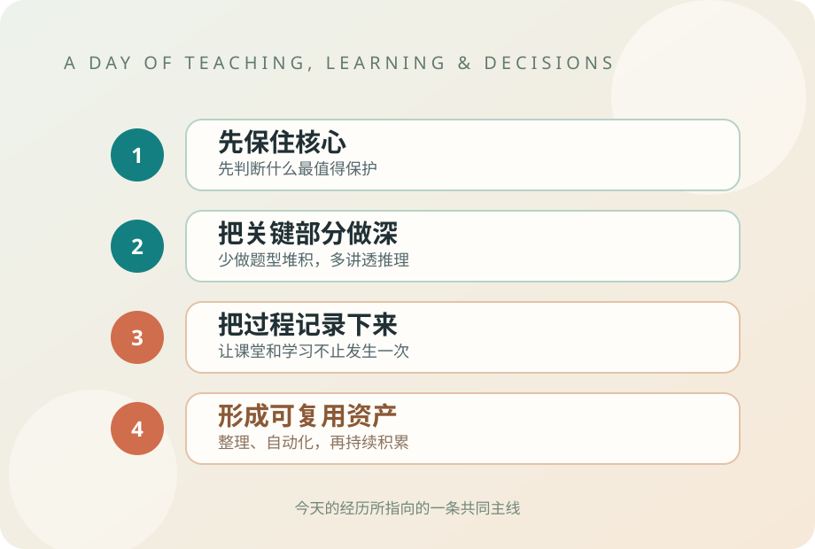
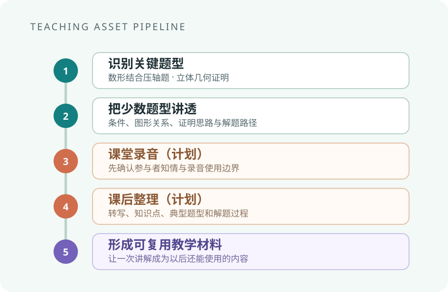
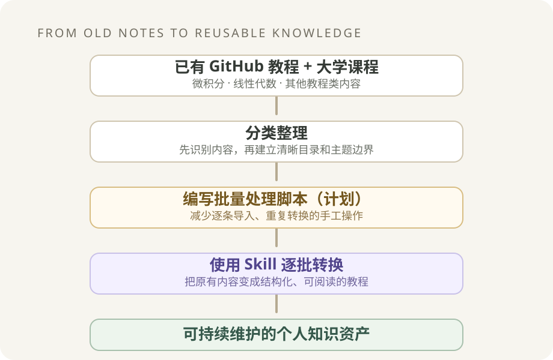
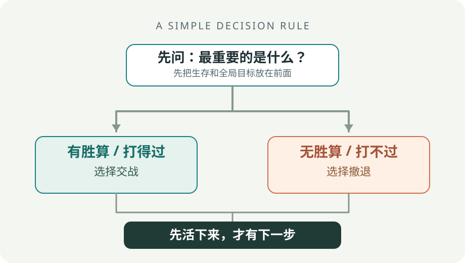

DAILY REFLECTION · 2026.11.21
先保住核心，再把事情做深
今天从早上七点半出门、两节数学课，到晚上的旧知识整理和《和平精英》，我反复想到一个问题：什么东西最值得保护？当我把注意力从“做得更多”转向“做深、留下来”，几件看似分散的事开始连在一起。
今天的主线：少做表面扩张，把重要的东西留下来
早上讲题时，我再次确认，题目不是做得越多越好；晚上看着自己过去积累的 GitHub 仓库，我又想到，学过的东西如果没有被整理和保存，时间久了就容易忘掉。玩游戏时，“先活下来”也让我想到，任何行动都应该先知道自己最需要守住什么。

课堂
少做题型堆积，把关键题目和证明思路讲透。
知识
把过去学过的课程和已有教程，整理成以后还能使用的资产。
行动
先看清最重要的目标，再判断什么时候进攻、什么时候撤退。
01 · 教学：宁可讲透几道题，也不要广泛堆题
今天早上七点半出发，吃了汉堡，然后上了两节课。整体感觉不错，讲解比较深入。数形结合的填空压轴题，是上午教学中一个值得继续打磨的难点。它要求学生把图形直观和数量关系结合起来，不能只靠记住某种题型的固定步骤。
另一位同学的立体几何，我把重点放在证明题，尤其是第一题。我更希望把证明的思路讲透：怎样识别已知条件，怎样找到需要建立的关系，怎样组织推理。学生真正需要带走的，不只是这道题的答案，而是遇到新题时能够重新组织证明的能力。
表面上的覆盖
题目做了很多，题型看起来都见过，但关键思路未必真正理解。
真正的深入
选少数关键题型，把条件、图形、推理和方法讲清楚，再通过练习做扎实。
宁可把几道题目、几个类型讲透、做透，也不要为了广泛覆盖而不断增加题量。
02 · 让课堂不只发生一次：从讲解到教学资产
上课时我想到，应该打开手机录音，把课堂过程记录下来。以后每节课都可以在合适的前提下录音，再把内容整理出来。这样，课堂里的讲解、学生容易卡住的地方、典型题型和证明路径，就有机会变成可以回看、修改和复用的材料。
今天还没有真正建立录音与整理流程，这仍然是一项准备启动的计划。尤其是课堂录音，需要先确认参与者知情，以及录音内容的保存和使用边界。

03 · 知识整理：过去学过的东西，也应该成为自己的资产
两节课之后，我去按摩、睡了一会儿；吃过午饭后，我把数学题目逐个导入 ChatGPT，让它们分别生成相应内容。手工一题一题输入，速度实在太慢了。我需要认真设计脚本，把重复的导入和转换过程自动化，而不是每次从头手工操作。
晚上回家后，我又想到自己已有的 GitHub 仓库。尤其是教程类项目，应该逐个分类整理。大学里学过的微积分、线性代数等课程，也可以逐步建设成独立的教程仓库，再用相应的 Skill 转换和完善。

把重复劳动拆成可重复的步骤
如果每道题都要手工输入，每个教程都要从头整理，积累速度就会被重复操作限制。脚本的意义不是替代理解，而是把机械步骤变成稳定流程，让精力更多地用于选择内容、检查质量和真正学懂。
捕获原始内容
保存课堂讲解、数学题目、旧课程资料和已有教程，不让重要内容只停留在一次性的使用场景里。
整理出清晰结构
按课程、知识点和题型分类，区分原始材料、解释、例题和练习，先让内容能够被找到。
把重复步骤交给脚本
将逐题导入和批量转换流程脚本化，减少手工重复操作；生成结果仍然需要检查和验证。
形成长期可复用的教程
把整理后的内容保存到教程仓库，后续备课、复习和继续学习时都能重新使用，并不断修订。
04 · 游戏里的提醒：打得过就打，打不过就跑
玩《和平精英》时，我想到一个很简单的原则：首先要保证自己活着。打得过就打，打不过就跑。只有先活下来，才有机会观察局势、等待下一次机会，并把后面的行动继续下去。
这句话真正难的地方，不在于记住它，而在于每次遇到冲突时都能执行它。人容易被眼前的对手、目标或情绪牵着走，忘了先判断自己最需要保护的东西是什么。

我想把这种判断训练成行动习惯：先看清全局和自己的优势，再决定投入多少；不因为一时想赢，就把最重要的东西押上去。
05 · 生活：把准备工作放到前一天
今天去了复旦，并安排了游泳。游泳时感觉非常开心、舒服、自由。这是一天里很放松的一段时间，也让我更确定，生活不能只围绕工作和内容生产来安排。
我希望以后晚上就提前准备好泳衣、泳裤和相关装备。这样第二天想游泳时，直接拿起装备就能出门，不需要临时准备。明天也想去菜市场买些食材，烤羊排，再炒几个菜，让日常生活过得更滋润一些。
早晨吃汉堡时想到鸡蛋，晚上想到提前准备游泳装备，明天想到买菜做饭——这些细节都在提醒我：生活质量常常不是靠临时兴起，而是靠一点点提前安排。
06 · 下一步：从想法开始，做出第一个可运行的流程
- 今晚提前准备好泳衣、泳裤和游泳装备。
- 明早去菜市场买食材，准备烤羊排并炒几个菜。
- 明天安排游泳。
- 明天去公司打卡。
- 为数学题目导入和生成流程写一个脚本，减少逐题手工操作。
- 开始梳理已有的教程类 GitHub 仓库，先做好分类。
- 规划微积分、线性代数等大学课程的教程仓库，分批整理旧知识。
- 下一次上课前准备手机录音，并先明确课堂录音的知情与使用边界。
不要只追求今天做了多少事情。先保住真正重要的东西，把关键问题做深，再把过程沉淀下来，让一次投入能够在以后继续产生价值。
文中将用户明确说出的经历与编辑性归纳分开呈现；尚未实施的录音、脚本和课程整理均保留为计划。